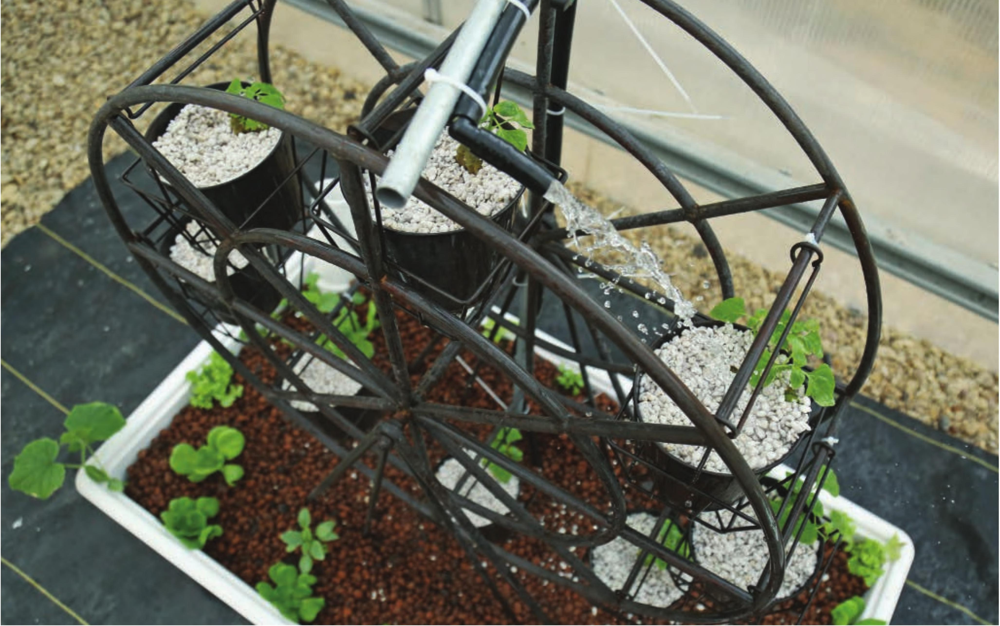

Ferris wheel systems are largely visual novelties, but they do function when it comes to growing small plants. Nutrient solution is delivered to small, quickdraining grow pots when they reach the peak of the wheel. The increased weight of the grow pot after irrigation encourages it to rotate downward, queuing up the next grow pot for irrigation. process. First, moving the Ferris wheel with a motor so the plants can be dipped into a nutrient solution can be a headache. Second, gravity and the weight of water are great for moving plants in a Ferris wheel. Third, use pots that drain quickly. Generally, stone wool and/or perlite are good options for these systems. NFT A-FRAME An NFT A-frame system consists of NFT channels arranged in an A shape. These systems have pros and cons. The pro is the ability to increase the number of plant sites in a given footprint. The cons are an uneven distribution of light and possible flow rate issues. If you plan on building an A-frame NFT system, follow the same guidelines for slope and flow rate as mentioned in the NFT project. Additionally, use V4-inch shutoff valves for each channel to balance flow among all levels. The use of V4-inch shutoff valves is further described in the project for the rain gutter garden. RAIN GUTTER SYSTEMS These are one of my favorite and are fun to build and customize. See next page. HYDROPONIC GROWING SYSTEMS 119
